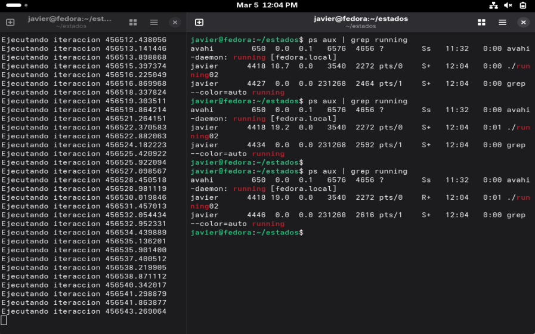
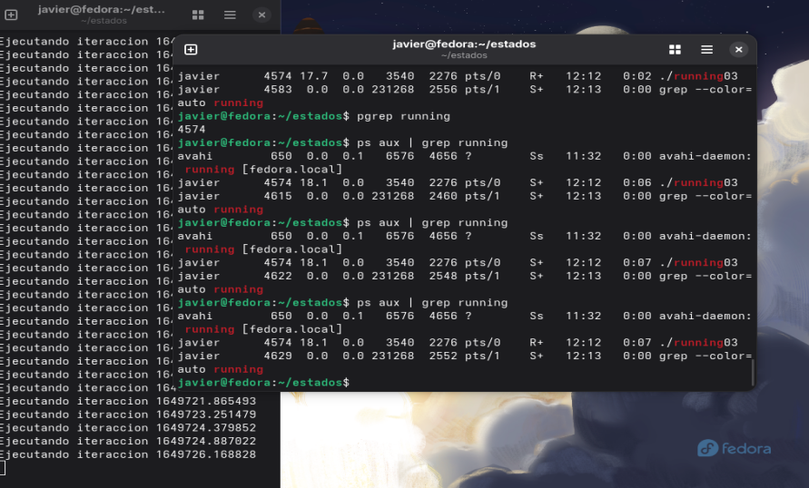
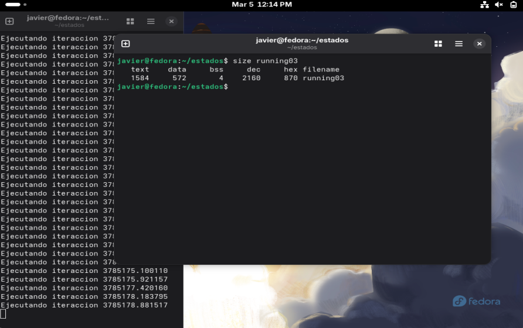
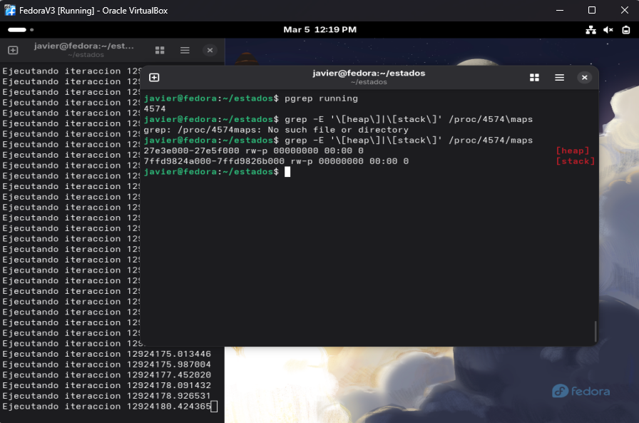
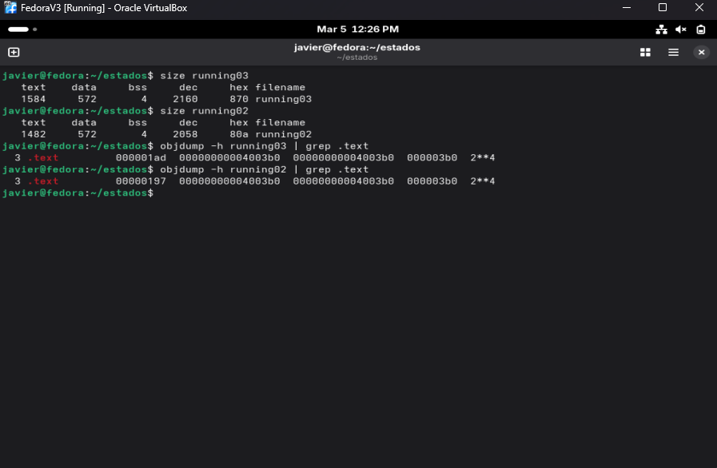
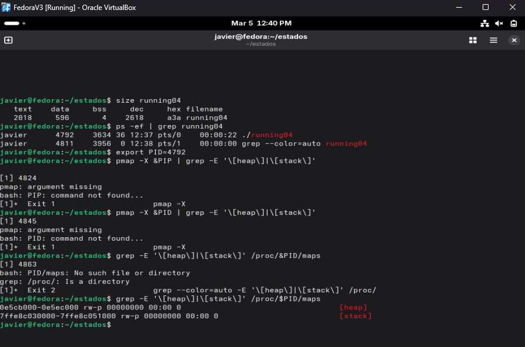
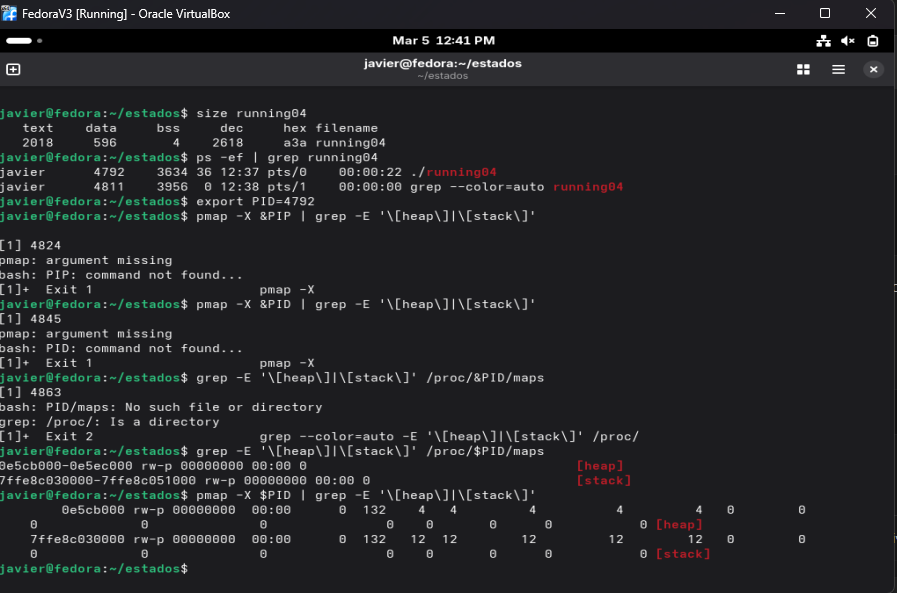
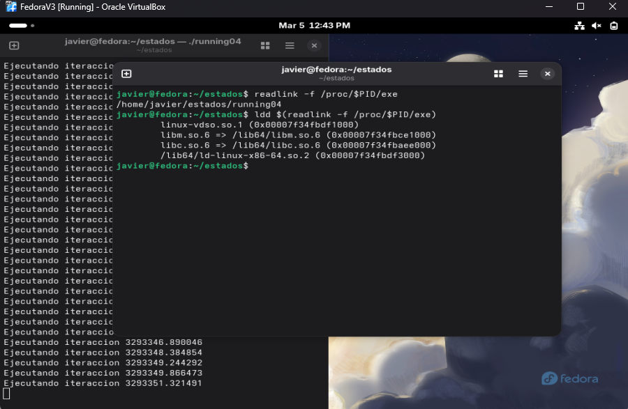

Cambio de estado en procesos y memoria TextSegment
1. Objetivos
Objetivo General
Ver y entender como un proceso pasa por diferentes estados y como los procesos pasan de Text_Segment
Objetivos Específicos
- Ver como un proceso cambia de estados.
- Ver cuando un proceso ingresa a TEXTSEGMENT.
- Ver con
sizelos primeros 3 elementos de la memoria. - Volver a ver los primeros 2 segmentos de la memoria dinamica.
- Entender el comando
objdump.
2. Investigación y Marco Conceptual
TextSegment
En la memoria de un programa compilado existen varias secciones que organizan cómo se almacenan y ejecutan los datos y las instrucciones. Entre las más importantes están Text Segment, Data Segment y BSS, cada una con un propósito específico dentro del funcionamiento del programa.
El Text Segment es la sección donde se guarda el código ejecutable del programa, es decir, las instrucciones que el procesador va a ejecutar. Esta parte normalmente es de solo lectura para evitar modificaciones accidentales o maliciosas durante la ejecución.
El Data Segment contiene las variables globales y estáticas que ya tienen un valor inicial definido en el código. Por ejemplo, si en el programa se declara una variable global con un valor específico desde el inicio, esa información se almacena en esta sección.
Por otro lado, el BSS (Block Started by Symbol) almacena variables globales y estáticas que han sido declaradas pero no tienen un valor inicial explícito. Estas variables se inicializan automáticamente en cero cuando el programa se carga en memoria, lo que permite optimizar el uso del espacio en el archivo ejecutable.
En conjunto, estas tres secciones ayudan a organizar la memoria del programa de forma eficiente, separando el código ejecutable de los datos inicializados y de los datos que se inicializarán al momento de la ejecución.
| Comando | Descripción |
|---|---|
size [proceso] |
Muestra el tamaño de las secciones principales de un archivo ejecutable u objeto |
grep -E '\[heap\]|\[stack\]' /proc/PID/maps |
Muestra el contenido de la memoria dinamica del HEAP y STACK |
objdump -h [programa] |
Muestra el encabezado de las secciones (section headers) de un archivo objeto o ejecutable |
3. Desarrollo Técnico
Paso 1. Ver el cambio de procesos
Para este ejercicio se busco ver como un proceso puede camabiar entre dos procesos. Para eso se creo un programa en c llamado running el cual busca imprimir un algo a la pantalla y esperar un segundo.
Al ver los procesos se ve que este codigo se queda en sleeping y no cambia a running (Figura ) . Esto es porque no esta ocupando realmente funciones de la CPU no esta haciendo ninguna operacion matematica, para eso creo running02.
Paso 2. Running02
Se importo la libreria math y se relizaron una operacion para que la CPU pudiera cambiar el proceso a running, igualmente el resultado se guardo con la palabra reservada volatile. Esta palabra le dice al programa que no optimize la variable porque puede ser modificada por valores fuera del programa.
Para eso se utiliza el htop es un programa con mejor rendimiento y mas funcionalidades. Poder utilizarlo dentro de Linux se debe instalar con el comando dnf como se puede ver en la Figura 3. Una vez instalado se puede ver en la Figura 4, toda la informacion con mas detalle y mas sencillo de identificar.
Paso 3. Running03 con size
Despues que se logro ver como el proso cambia del sleeping a runnning, algo importante es ver como es que el TEXT SEGMENT aumenta cuando se agregar mas intrucciones. Dentro del codigo se puede ver como al agregar solo la funcion, running03 pesa mas que running02. Este se visualiza con el comando de sizeel cual permite ver el tamaño de cada seccion. Esto se muestra en la figura
Paso 4. Modificar las secciones de memoria dinamica en c y c++
Finalmente existe una forma de modificar las secciones del heap con la funcion malloc(). Esta le pide al sistema operativo que le regrese una direccion de memoria diponible para el tipo de dato. Dentro del codigo de running04 se cambia para que se guarde un resutado de un doble al declar explicitamente. Para interactuar con el malloc() se debe utilizar un pointer.
Paso 5. Ver el comando objdump
Sirve para analizar archivos ejecutables y objetos. Esto permite ver el codigo ensamblador, los segmentos de memoria que esta ocupando, los headers del ejecutable entre otras cosas. Su output se puede ver en la Figura.
4. Evidencia de Ejecución
Durante la ejecución del programa, se enviaron distintas señales utilizando el comando








5. Conclusiones y Trabajo Futuro
En esta leccion aprendi de mejor manera como es que el codigo que uno programa termina siendo unos y ceros que la computadora puede ejecutar. Se me hace muy increible ver todo lo que se tiene que tomar en cuenta para que el sistema pueda ejecutar un hello world y un 1+1. Por ejemplo, no se me habia venido a la mente la cantidad de bits que aumenta el codigo incluso con una funcion mas. Esto no importa actualmente en los programas que estoy haciendo, pero para sistemas con recursos limitados, es indispensable al querer tener la menor cantidad de memoria y recursos utilizados por el sistema. Me imagino que un buen ingeniero siempre tiene en mente estas situaciones.
Trabajo Futuro: Explorar mas las funciones de malloc(), free() y otras que permitan utilizar la memoria del sistema de manera mas efectiva.
6. Archivos Fuente
7. Bibliografía
Reporte generado con ayuda de ChatGPT